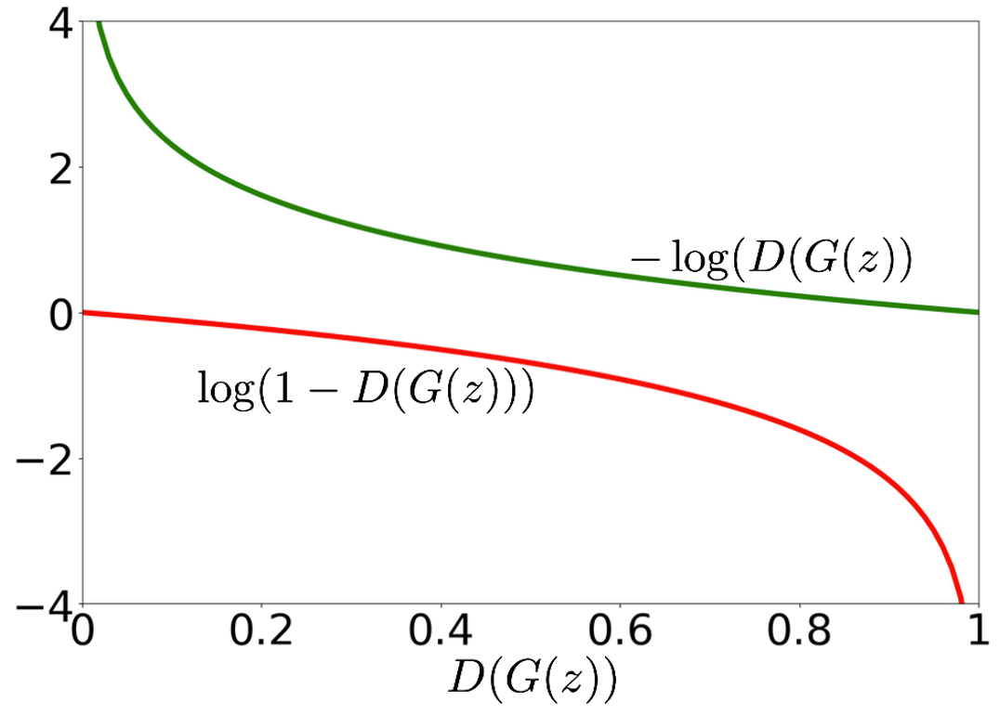

生成对抗网络（GAN）
生成对抗网络（GAN）是一种生成模型，它由两个神经网络组成：生成器 和判别器 。生成器负责生成数据，判别器负责判断数据是否真实。生成器和判别器通过对抗训练的方式共同提升，最终生成器 可以生成逼真（以假乱真）的数据。
生成对抗网络的原理
判别器 （Discriminator）
我们将先关注辨别器，其的目标是判断输入的数据是真实数据还是生成器生成的数据。辨别器的输入是一个数据，输出是一个概率值，表示输入数据是真实数据的概率。即
其中我们认为 是辨别器的参数。
我们认为辨别器有两个目标：
- 尽可能的将真实数据判断为真实数据，我们需要最大化 。
- 而对于我们生成的数据，我们需要最小化 。
我们线关注目标1，当数据点为真时，即从数据集这个分布中采样点 ，最大化 （i.e. ）。因此我们可以最大化其对期望：
而对于目标 2，对于生成数据，我们需要最小化 。
我们可以将数据看作从生成器这个分布 中采样得到的，即 。而最小化 等价于最大化 ，即 。因此我们可以将目标 2 转化为：
我们组合两个目标函数，得到对于判别器最终的目标函数：
生成器 （Generator）
而对于生成器，我们的目标是让生成器生成的数据尽可能的逼真，即我们希望生成器生成的数据被判别器判断为真实数据。因此我们需要最大化 ，其中 是生成器的输入， 是生成器的参数。
生成器是从一些随机噪声中生成数据，因此我们可以认为生成器是从一个噪声分布 中采样得到的。因此我们可以认为生成器为：
考虑我们的目标，我们希望最大化 ，也就意味着最小化 我们因此可以写出生成器的目标函数：
结合形式
我们将两个目标函数一起看
对于生成器 :
而对于判别器 :
然后我们惊奇的发现，哇！判别器的目标函数的后半截和生成器的目标函数是一样的！除了针对不同参数进行优化，而更重要的是优化方向是反着的（一个是最大化，一个是最小化）（x）。
我们如果站在优化生成器的角度来看判别器的目标，因为在优化生成器的参数 时，判别器的参数 是固定的，固我们可以认为 是一个常数，如果我们令其为 ，那么我们可以将生成器的优化目标写为：
至此，我们发现生成器和判别器的目标函数是一样的，只是优化方向不同。因此我们可以将生成对抗网络的优化目标写为：
需要注意的是，我们会优先优化判别器，然后再优化生成器。因此 会被放在内侧，而 会被放在外侧，不可调换位置。
而优化这个目标是个 Min-max 游戏 :-)
对抗训练（Adversarial Training）
我们可以通过对抗训练的方式来优化生成对抗网络。对抗训练的过程是这样的：
- 我们首先固定生成器 的参数 ，优化判别器 的参数 ，使得判别器的目标函数最大化。
- 然后我们固定判别器 的参数 ，优化生成器 的参数 ，使得生成器的目标函数最小化。
- 重复步骤 1 和步骤 2 直到收敛。
用代码来说：
phi := initWeights() // 判别器的参数
theta := initWeights() // 生成器的参数
eta := 0.01 // 学习率
maxIter := 100 // 最大迭代次数
k := 5 // 训练判别器的次数
for (i := 0; i < maxIter; i++) {
// 优化判别器
for (j := 0; j < k; j++) {
X := sampleFrom(dataset)
Z := sampleFrom(noise)
X_G := G.generate(G, Z)
loss := D.loss(weight = phi,
realSample = X,
fakeSample = X_G)
grad_phi := D.gradient()
phi = phi - eta * grad_phi
}
// 优化生成器
Z := sampleFrom(noise)
loss := G.loss(weight = theta,
noise = Z)
grad_theta := G.gradient()
theta = theta - eta * grad_theta
}
实践中的差异
需要注意的是在实际训练中，我们会对目标函数进行一些调整。在优化目标中的后半项 。我们在发现最小化这一部分时候，其梯度会随着其值降低而梯度越来越陡：
 TODO: COPYRIGHT
而这和我们所期望是不一样的，我们希望在优化最开始更陡峭，而随着优化的进行，梯度逐渐变缓，这样我们的步长越来越短可以更好的收敛。
我们修改这一部分的目标函数为：，这样我们在最小化这一部分时，其梯度会随着离最优点越近，其值降低而梯度越来越缓。
这两个函数所优化的目标是一致的。
由于这个问题只涉及到最小化，因此我们只会修改生成器在优化时的目标函数，即 G.loss()，而不会修改判别器的目标函数。
何时停止
什么时候停止训练呢？我们可以通过三种方式来判断：
- 当我们的生成器生成的数据足够逼真时，我们可以停止训练。
- 我们达到对应的迭代次数时，我们可以停止训练。
- 或者我们已经达到最小的损失时，我们可以停止训练。
而在这将讨论低一点，我们怎么判断生成器生成的数据足够逼真呢？换句话说，我们怎么判断 呢？
已经有证明表明，在给定 时，如果辨别器 有无限能力，其最优结果为
而如果我们的生成器生成的数据足够逼真，那么我们可以认为 ，因此我们可以认为 。
因此如果辨别器达到此值，我们可以认为生成器生成的数据足够逼真。